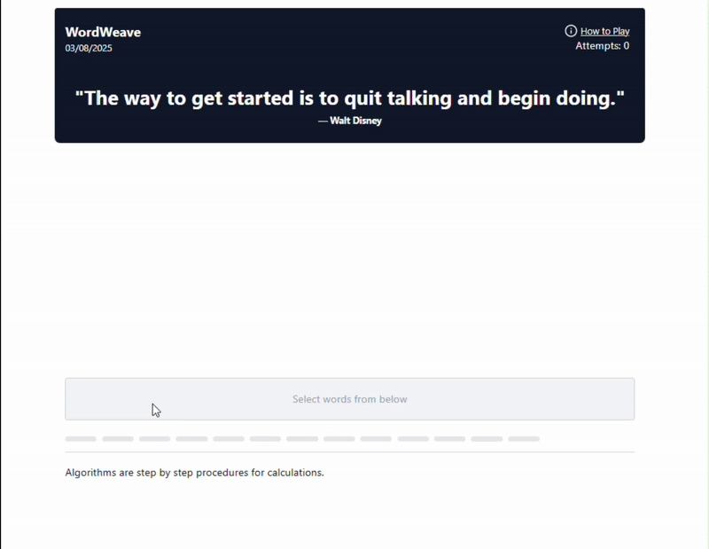
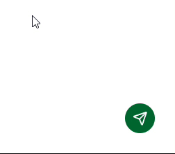
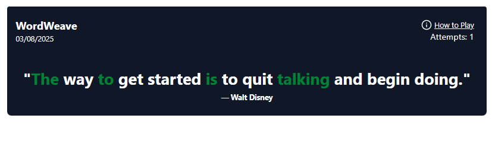

13 words, 25 attempts, and a deadlock at 1 a.m.
The second commit in this repo is called "working prototype" and is timestamped 2:44 a.m. It contains a word game with one rule: you can never type the quote you're trying to produce. You pick words from a paragraph GPT-3.5 just wrote, send them back as a prompt, and watch the next completion stream in, hoping the right words fall out. go + react token streaming
That rule worked on night one. Almost nothing else did. This is the story of the deadlock that hit the first time someone won, the model downgrade with the best commit message I've ever written, and why the project's last two commits are both called "hardcode everything."
You never get to type the answer
You're shown a target quote and a seed paragraph. You select up to 13 words from the paragraph (click to pick, drag the bubbles to reorder), and that word salad becomes your prompt. The backend streams a fresh paragraph back from GPT-3.5-Turbo, and every word of the quote that appears in the generated text lights up green. Light up the whole quote within 25 attempts and you win, unlocking the next challenge.

The fun is the indirection. Say the quote needs the word "rope." You can't type it; you have to find words in the current paragraph that make the model likely to say "rope," and the model's output becomes your next word pool. The LLM is both the obstacle and the only tool you have. But for that loop to be a game at all, the model has to actually play along, and GPT-3.5's first instinct, handed a bag of 13 disconnected words, is to ask what you mean.
It deadlocked the first time someone won
The 2:44 a.m. prototype was a single main.go (it would eventually swell to
864 lines) holding sessions in a map behind a sync.RWMutex. Winning a
challenge called ServeNextChallenge, which took the read lock, then called
CreateSession, which took the write lock on the same mutex. Go's
RWMutex won't grant a writer while a reader is active, including when the reader is
you. The goroutine waited on itself forever. So the game worked perfectly right up until somebody
won, and then the server quietly stopped answering.The fix landed at 00:53 the next night, in a commit whose message ends "althought idk if its working." It was working. The confidence came later.
The other thing the first 24 hours fixed was the bill. The prototype called GPT-4o, which is a lot of model for the job of free-associating from 13 words. That evening it became GPT-3.5-Turbo.Commit message, verbatim: "using 3.5 instead of 4o for saving 53104$". I did not have $53,104 at stake. The number was a vibe. A cheaper model isn't just thrift here: a dumber autocomplete is arguably a fairer opponent.
Tokens, while they're hot
The part I cared most about getting right, from the prototype onward: the player should see tokens appear the moment the model produces them, not a spinner followed by a paragraph. The whole path is streaming: no buffering stage anywhere.
On the Go side, POST /game spins up a goroutine that consumes the OpenAI stream and
pushes each delta onto a buffered channel; the handler drains the channel, writing and flushing
each chunk over chunked transfer encoding:
chunks := make(chan string, 10)
go func() { content = llm.StreamingLLM(req.Input, r.Context(), chunks) }()
for chunk := range chunks {
fmt.Fprint(w, chunk)
w.(http.Flusher).Flush() // push the token to the browser now
}The channel close doubles as the "stream finished" signal; that's when the handler runs the word match and updates the session, so the green letters update right as the text stops moving. On the browser side there's no SSE library, just the raw fetch reader:
const reader = response.body.getReader();
const decoder = new TextDecoder();
while (true) {
const { done, value } = await reader.read();
if (done) break;
streamedText += decoder.decode(value, { stream: true });
setParagraph(streamedText); // re-split into clickable words every chunk
}A subtle consequence: the paragraph is re-tokenized into clickable word spans on every chunk, so the word pool you'll pick from next attempt is literally assembling in front of you as the model writes it.

map behind that same RWMutex. Each
session's LastAccessed doubles as a rate limiter: a second LLM call within 3 seconds
is rejected. Crude, but it caps the OpenAI bill per player without any infra.
"Cat" should not solve "category"
The prototype decided whether a quote word was matched with strings.Contains,
plain substring matching. That fails in both directions: it hands out freebies whenever a quote word
hides inside a longer one, and it gives the player nothing when the quote says "dreams" and
the model generates "dreaming", even though steering the model to dream-anything was
the entire hard part.My favorite freebie: the quote word "rope" lights up the moment the model mentions Europe.
The fix that shipped with the rewrite is a Porter stemmer: a small FastAPI microservice
(lemmaSearch/server.py, NLTK) that stems both word lists and returns matched index
pairs. The Go server calls it after each completed stream and flips the matched quote indices to
solved in the session's progress array.
POST /find-common-words
{ "content": ["dreaming", ...], "challenge_words": ["dreams", ...] }
→ { "matched_indices": [[0, 0], ...] } # content idx, quote idx
Five weeks after "final prod version"
On February 4 I shipped a commit called "final prod version" and stopped. On March 7 I came
back and wrote two commits in a row, both called "rewrite." The 864-line
main.go became a thin router over internal/ packages (game loop, LLM
client, sessions, models, frontend), and the React SPA stopped being a separate deployable
entirely. The Vite build output is compiled into the Go binary with go:embed:
//go:embed reactbuild
var reactDist embed.FS
// http.FileServer(http.FS(dist)) — same process, same port
make runs the whole chain: npm ci → vite build (output lands
in internal/frontend/reactbuild) → go vet → go build. The
result is one file that serves the SPA on GET / and the game API on /game.
Deploying means copying one binary; there is no "frontend deploy" that can drift from the backend.
"prod push yolo"
The rewrite also brought a real deploy path. Deploys are triggered by cutting a GitHub release, not every push. The Actions workflow builds the full binary (Node 18 for the Vite step, Go 1.23 for the rest), then ships it over SSH and bounces the systemd unit.
✓ Set up Go 1.23 / Node 18
✓ make # npm ci → vite build → go vet → go build
✓ Stop service & remove old binary
✓ scp bin/words-weave → EC2
✓ sudo systemctl restart words-weave.service
One caveat worth being explicit about: the workflow only deploys the Go binary. The stemming
microservice has to already be running on the host; it's set up once, by hand, and the Go code
expects it at localhost:8000.
Four days after the rewrite merged, the log reads: "prod push yolo", then "hardcode
everything", twice. That's where the repo still sits, and I'd rather list what those commits
papered over than pretend otherwise:The prototype actually called Validate on every prompt. The rewrite is where it got lost; rewrites delete bugs and features with equal enthusiasm.
Five fixed quotes live in internal/models/State.go. The midnight refresh (ZenQuotes + GPT-4o-generated seed paragraphs) is written, and commented out in game.go. The puzzle doesn't actually rotate daily yet.
Sessions live in memory and die on restart. A SQLite layer (internal/database) exists with a schema and SaveState, but initDB is never called and the save call is commented out.
State.Validate checks that prompt words actually came from the paragraph, and is never called. A crafted POST can send any prompt it wants straight to the model.
The lemmaSearch URL is hardcoded to localhost:8000, and a few error paths return questionable codes: a missing session gets a 408, as does the rate limit.
What the 2:44 a.m. version already knew
Here's the thing the commit log makes embarrassingly clear: the core loop (steer a streaming model using only the words it gave you) worked in the first night's prototype and never needed rethinking. Every hour since went into plumbing: locks, stemming, embedding, deploys, the daily rotation that still isn't wired up. The prototype proved the game; the next six weeks were me discovering that a game is maybe ten percent game. If the loop hadn't been fun at 2:44 a.m., no amount of architecture would have saved it. And because it was, even "hardcode everything" ships something worth playing.
Layout:
main.go (routing) ·
internal/game (game loop + streaming handler) ·
internal/llm (OpenAI stream) ·
internal/sessions (in-memory sessions) ·
internal/frontend (embedded SPA) ·
lemmaSearch/ (stemming microservice) ·
words-weave/ (React SPA).